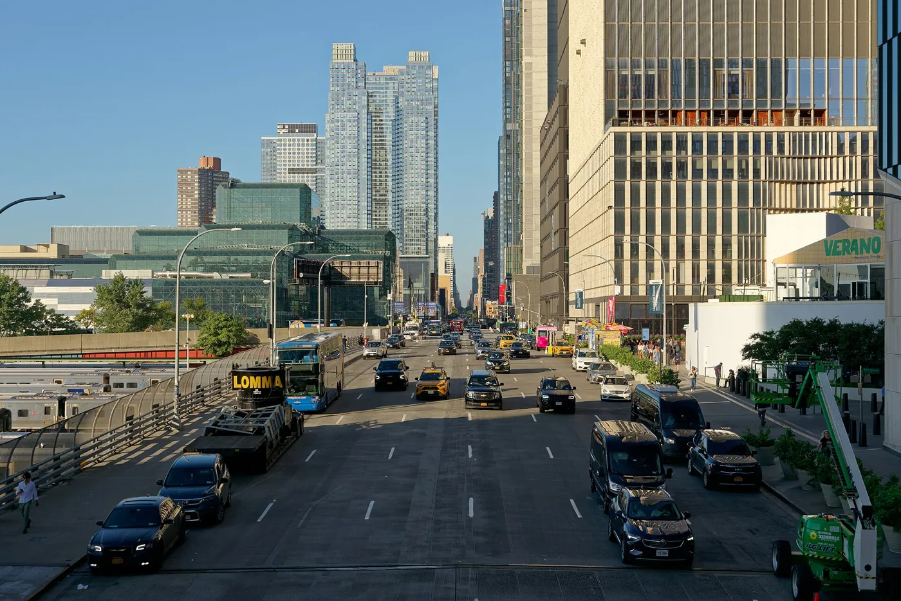
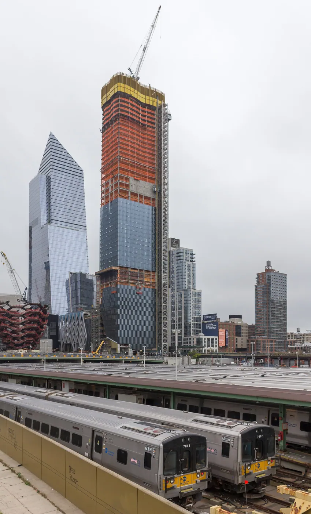
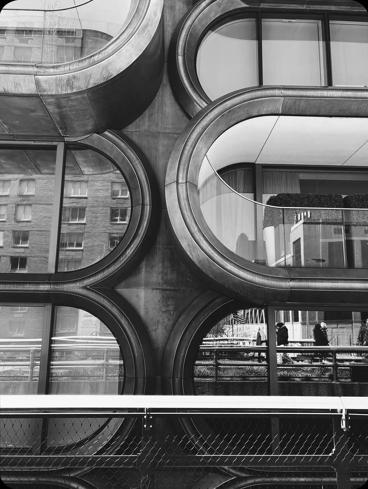
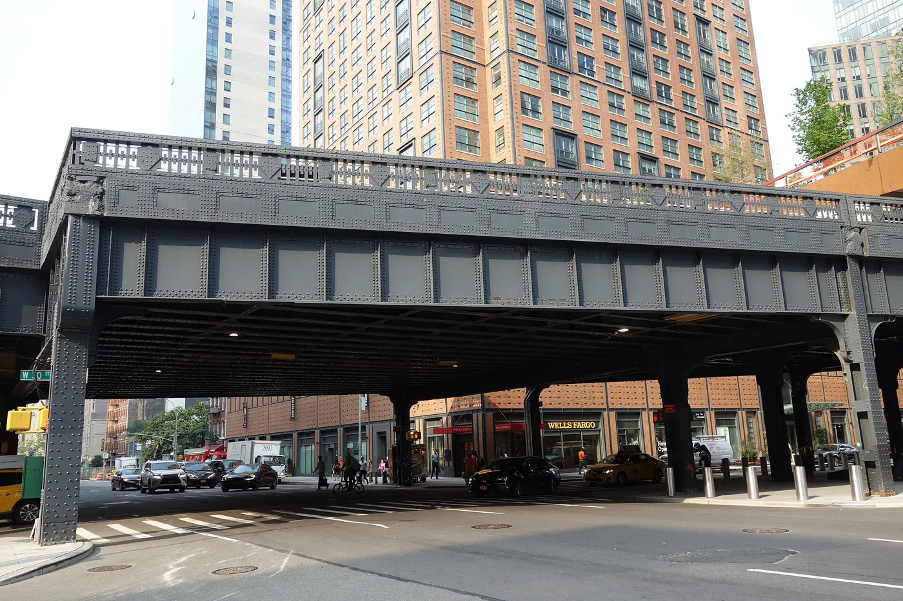
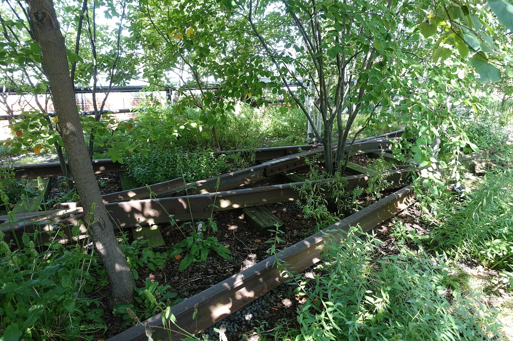
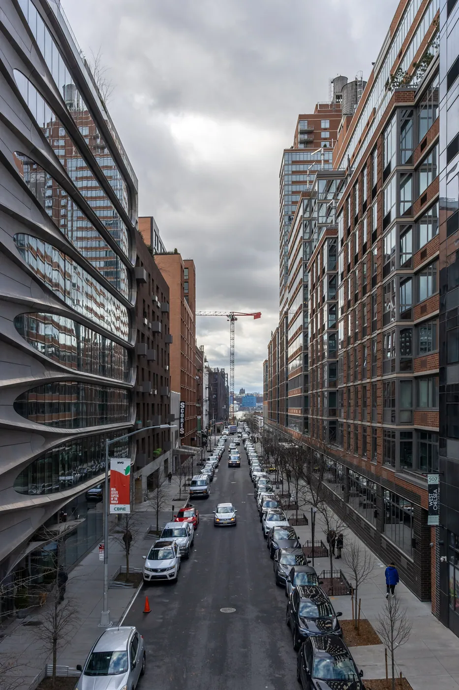
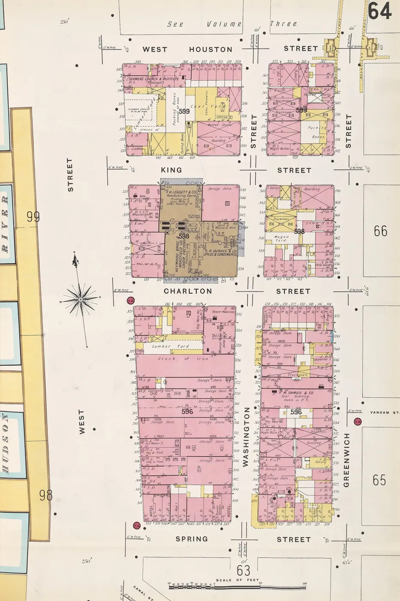

1/8 · ExteriorPhoto: U.S. Department of Agriculture · Public domain · source
2/8 · Exterior · High line new york city taken from the top floor of the Whitney MuseumPhoto: Ellywa · CC BY-SA 4.0 · source
3/8 · Exterior · Plants on high line New York cityPhoto: Ellywa · CC BY-SA 4.0 · source
4/8 · ExteriorPhoto: Tdorante10 · CC BY-SA 4.0 · source
5/8 · Detail · Plants on high line New York cityPhoto: Ellywa · CC BY-SA 4.0 · source6/8 · ContextPhoto: Tdorante10 · CC BY-SA 4.0 · source
7/8 · Context · View of 28th Street from the High Line, New York CityPhoto: Photograph by Mike Peel ( www.mikepeel.net ) · CC BY-SA 4.0 · source
8/8 · Drawing · Plate 64 from: Insurance Maps of the City of New York Borough of ManhattanPhoto: Sanborn Map Company · Public domain · sourcePublic space · Contemporary
High Line
Diller Scofidio + Renfro, James Corner, Piet Oudolf · New York, United States · 2009
Key featuresAn abandoned elevated railway turned into a park in the air.
- Architect
- Diller Scofidio + Renfro, James Corner, Piet Oudolf
- Place
- New York, United States
- Year
- 2009
- Typology
- Public space
- Movement
- Contemporary
- Region
- Americas
See it on the wall


.jpg){kind=link}


_05_-_High_Line_Spur.jpg){kind=link}

_24_-_High_Line.jpg){kind=link}